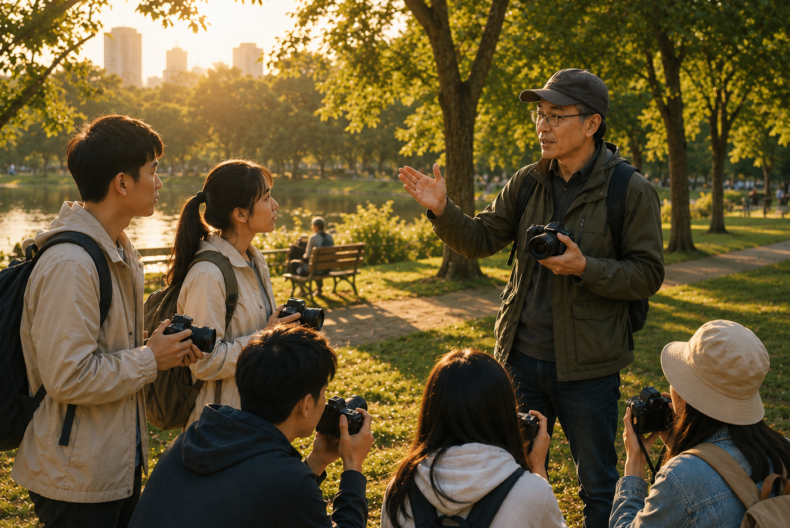
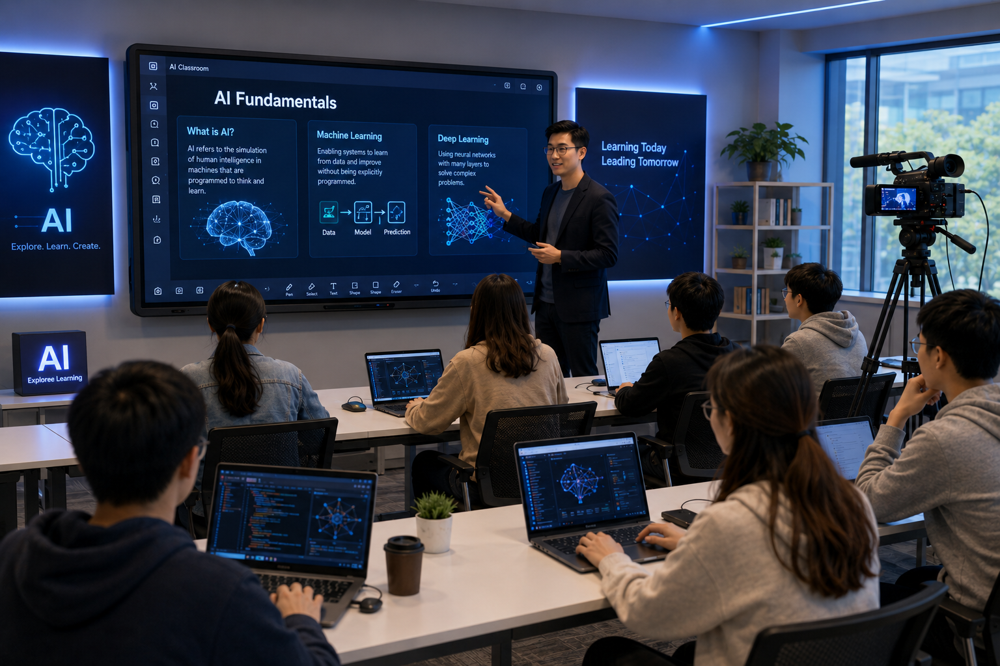
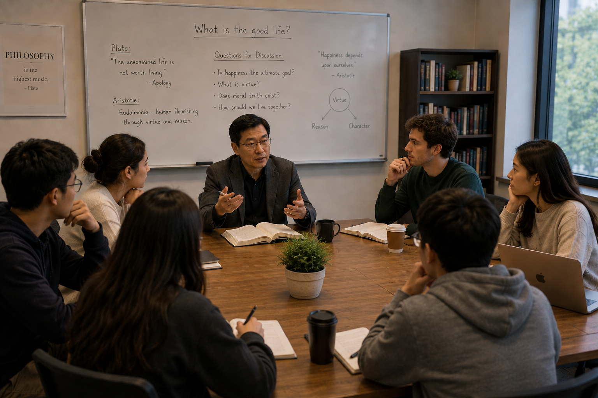

摄影

自从相机进入手机之后，摄影已经成为一种随处且随时的活动。每个人都想拍出更好的照片。我们的摄影课程也针对所有人设计。
为了适应不同需求并促进个人成长，我们将摄影课程分为三个层次：初级、中级与高级课程。起初，学生只需要一部手机。随着技艺的提升，他们可以使用更高级的器件，并在作品中发挥更多的创造力。
为了强调动手实践与现实应用，我们的摄影课程在户外进行，通常场所是公园，而不是教室。每一节课都是一次真实的摄影采风。
了解更多人工智能

随着人工智能（AI）近年来的飞速发展，人类历史正在迅速迈入人工智能时代。我们的人工智能课程旨在帮助普通人为这个新时代做好准备。
在人工智能时代，AI技术只是基础。在此之上，社会的诸多方面正在发生转变。因此，我们的人工智能课程不仅涉及技术，也包括理解人工智能对我们的生活和社会带来的更广泛影响。
我们的入门课程帮助学生建立对人工智能时代的全面理解。除了深入理解AI概念并掌握AI工具外，课程还强调AI的伦理与社会维度。后续课程将建立在这一基础之上。
了解更多批判性思维与写作

在这个人类历史大转型时代，旧的思想框架和社会体制开始摇晃，新的框架和体制仍有待建立。因此，人们需要对许多基础性的问题进行思考。这种基础性的思考不再是思想家的专职，而变成普通人也会关心的话题。这些思考要求人们对诸多现存事物做批判性考察。
我们的课程将围绕科学与技术、个人生活、教育、历史、文化等多个领域中的具体问题开展讨论，并在此过程中培养批判性思维。对于有兴趣的学生，我们也提供批判性写作技能课程。
计划于2027年推出……
了解更多